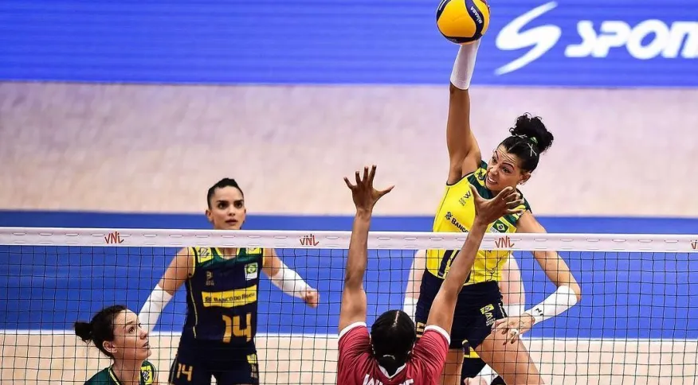

Brasil é dominado pela Turquia e perde segunda seguida na Liga das Nações
Outras Novidades
Brasil tropeça e perde para o Canadá na Liga das Nações de Vôlei
O Brasil não conseguiu se recuperar na Liga das Nações da Vôlei Feminino. Na manhã desta sexta-feira (30), o time comandado por José Roberto Guimarães foi derrotado pela Turquia por 3 a 0 (25/22, 25/16 e 25/22).
A partida foi disputada na cidade de Bangkok, na Tailândia. Agora, a equipe nacional acumula duas derrotas e uma vitória nesta terceira semana da competição continental.
Antes, já havia perdido para o Canadá e batido a Itália, que está atuando com uma escalação alternativa. A Seleção Brasileira encerra a participação na terceira semana da Liga das Nações contra a Tailândia neste domingo (2), às 10h30 (de Brasília). As anfitriãs têm apenas dois triunfos até aqui no torneio.
O Brasil não se impôs em nenhum momento sobre a Turquia. Depois de derrotas nos dois primeiros sets sem liderar o placar por longo período, o time comandado por José Roberto Guimarães conseguiu abrir vantagem na terceira parcial.
Apesar de liderar o placar por 22 a 19, a equipe nacional teve dificuldades para colocar a bola no chão e permitiu a virada em 25 a 22.